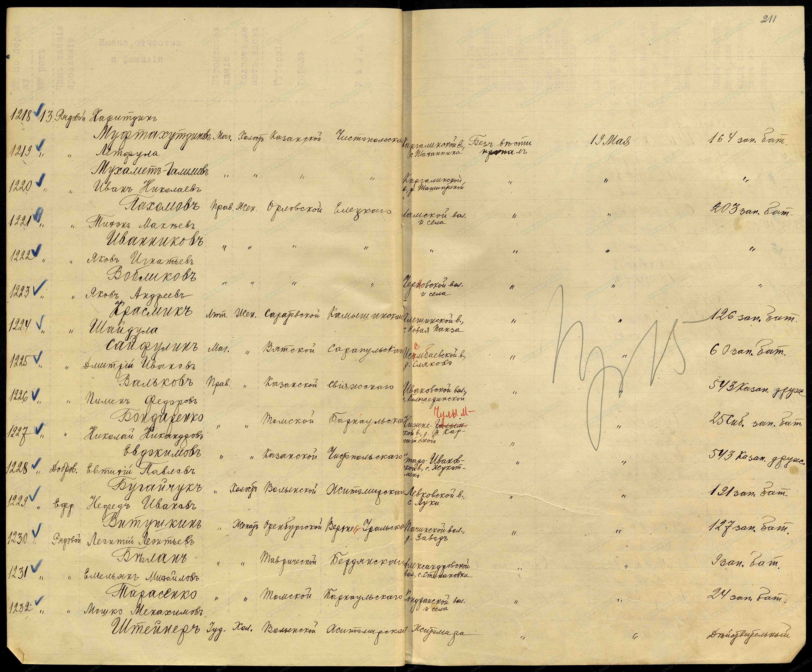
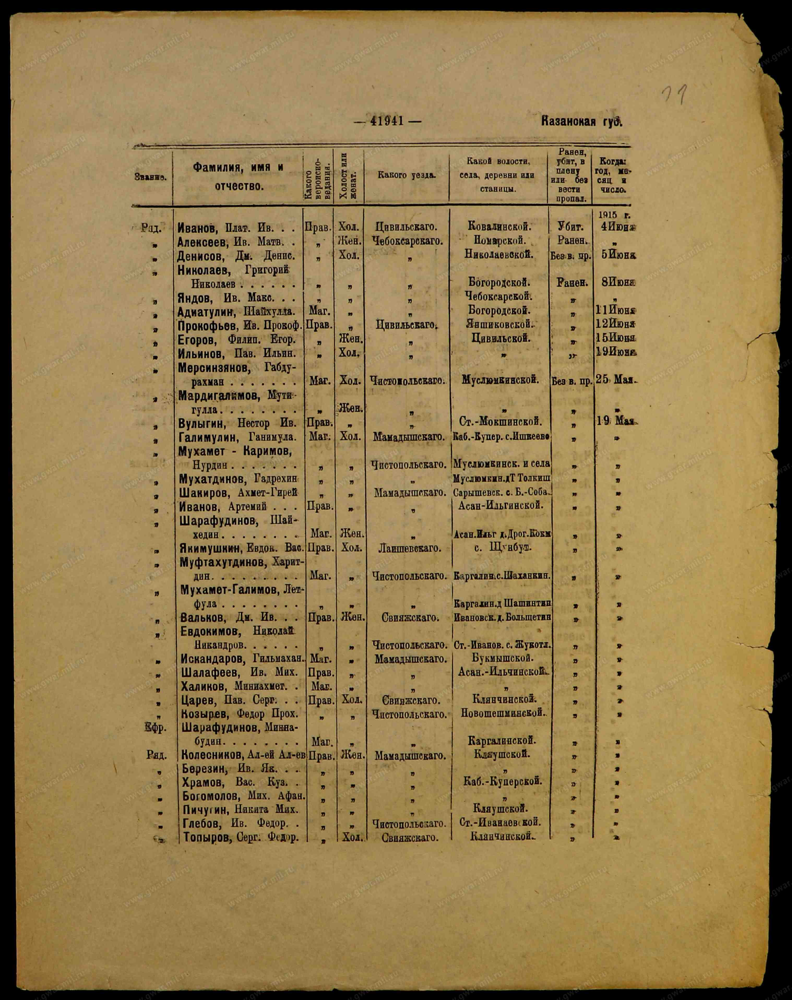

Главные открытия второго прохода
- Раскрыто настоящее дореволюционное имя родового села (`A-0011`): село Галактионово Чистопольского района получило это название лишь в июне 1922 года (в честь погибшего в авиакатастрофе возле села секретаря Татобкома А. П. Галактионова). До 1922 года оно называлось село Никольское (Жукотино тож) Старо-Иванаевской волости Чистопольского уезда Казанской губернии. Именно поэтому прадед в документах 1915 г. записан как уроженец с. Жукотлино / Жукотл. / Кутино!
- Найдены 3 подлинных архивных документа 1915 г. в РГВИА (`A-0008`, `A-0009`, `A-0010`) о плене прадеда Николая Никандровича Евдокимова:
- Точная дата рождения прадеда: 1 октября 1888 года (
род. 88. 1/Xв карточке военнопленногоA-0010). - Призван в 543-ю пешую Казанскую дружину ополчения, откуда переведён рядовым в 13-ю роту 127-го пехотного Путивльского полка (
A-0008). - 19 мая 1915 года в бою под г. Надворна (Восточная Галиция, Горлицкий прорыв) взят в плен австро-венгерскими войсками (в полковом списке
A-0008в тот же день учтён как «без вести пропал»). - 8 июня 1915 года водворён в лагерь военнопленных Дейч-Габель (Deutsch-Gabel, Австро-Венгрия; ныне Jablonné v Podještědí, Чехия), где в латинской транскрипции был записан как (Евдокимов) Ефтикимов Николай Никанорович, с. [Жу]Кутино Казанск. губ. (
A-0010).
- Точная дата рождения прадеда: 1 октября 1888 года (
- Установлен дед по матери (`P-0004` — `corroborated`): седьмой ребёнок прадеда Николая Никандровича и прабабушки Агриппины Александровны Беловой — Евдокимов Александр Николаевич («7. Шура», род. 1926). Жил в Перми (Молотове) в 1953–1956 гг. (где родились дядя Виктор 14.02.1953 и мама Нина 26.01.1956), а затем в пос. Перово (г. Симферополь, Крым) с бабушкой Натальей (`+Наташа 92`, `P-0006`).
- Восходящая цепочка до крепостной реформы 1861 года: отец прадеда Николая — Евдокимов Никандр Михайлович (род. 1869, `P-0009`); дед — Михаил Евдокимович (`P-0010`), получивший в 1861 г. при освобождении крестьян паспорт и фамилию Евдокимов по своему отцу Евдокиму (`P-0015`).
Подлинные архивные документы 1915 г. и эпиграфика




Историко-архивная справка по с. Галактионово (Никольское / Жукотино)
| Параметр | Исторические и архивные сведения (`[A-0011]`) |
|---|---|
| Исторические названия | До июня 1922 г. — село Никольское (Жукотино тож) Старо-Иванаевской волости Чистопольского уезда Казанской губернии (на берегу Камы рядом с древним городищем Джукетау / Жукотин). В 1922 г. переименовано в с. Галактионово. |
| Православный приход | Никольская церковь (построена в 1870 г. взамен старой деревянной церкви XVII–XVIII вв.) с приделом Казанской иконы Божией Матери (Богородицким). Метрические книги за 1860–1918 гг. хранятся в ГАРТ (г. Казань), Фонд 4, Оп. 176 и Оп. 2 (оцифрованы на FamilySearch). |
| Помещики до 1861 г. и ревизские сказки | Село было помещичьим (владельцы: Е. Л. Жемчужникова, поручик М. И. Зуев, Аристовы, Ермоловы). Именно при освобождении крестьян в 1861 г. прапрапрадед Михаил Евдокимович (`P-0010`) получил паспорт и фамилию Евдокимов. Ревизские сказки 10-й ревизии (1858 г.) хранятся в ГАРТ, Фонд 3, Опись 2, дела 390 и 391 (9-я ревизия 1850 г. — д. 259; 8-я ревизия 1834 г. — д. 139, лл. 40–49). |
Проверка родственных связей (`R-0001` .. `R-0011`)
| ID связи | Родитель → Ребёнок | Статус | Доказательная база |
|---|---|---|---|
R-0008 |
Евдокимов Никандр Михайлович (`P-0009`, 1869 г.р.) → отец → Евдокимов Николай Никандрович (`P-0007`, 1888 г.р.) | strongly-corroborated | Независимое совпадение семейной родословной [A-0004; A-0006] и подлинного полкового списка 127-го полка 1915 г. [A-0008; A-0009] по редкому отчеству Никандровъ и селу Жукотино / Галактионово. |
R-0001 |
Евдокимова Нина Александровна (`P-0002`, 1956 г.р.) → мать → Евдокимов Антон Вадимович (`P-0001`, 1988 г.р.) | corroborated | Прямые сведения заявителя [A-0001] + независимая родословная таблица кузины Ларисы Селиховой [A-0006] (Нина 26.01.1956 → Антон 16.08.88). |
R-0003 |
Евдокимов Александр Николаевич (`P-0004`, «7. Шура», 1926 г.р.) → отец → Евдокимова Нина Александровна (`P-0002`, 1956 г.р.) | corroborated | Пересечение отчества Александровна и места рождения Пермь из [A-0001] с прямой записью в таблице [A-0006]. |
R-0006 |
Евдокимов Николай Никандрович (`P-0007`, 1888 г.р.) → отец → Евдокимов Александр Николаевич (`P-0004`, 1926 г.р.) | single-source | Личность отца P-0007 документально доказана в РГВИА [A-0008; A-0010]; родительская связь к 7-му ребёнку (1926 г.р.) зафиксирована в [A-0006]. |
R-0007 |
Евдокимова (Белова) Агриппина Александровна (`P-0008`, 1889–1971) → мать → Евдокимов Александр Николаевич (`P-0004`, 1926 г.р.) | single-source | Личность и годы жизни матери доказаны памятником [A-0007] и таблицей [A-0004..A-0006]. |
R-0005 |
Евдокимова Наталья (`P-0006`, «+Наташа 92») → мать → Евдокимова Нина Александровна (`P-0002`, 1956 г.р.) | single-source | Запись в родословной таблице [A-0006] (пос. Перово, г. Симферополь). |
R-0009 |
Евдокимов Михаил Евдокимович (`P-0010`) → отец → Евдокимов Никандр Михайлович (`P-0009`, 1869 г.р.) | single-source | Запись в родословной таблице [A-0004..A-0006]; проверяется по метрике 1869 г. Никольской церкви с. Жукотино (ГАРТ ф. 4). |
R-0002 |
Баронов Вадим Валентинович (`P-0003`, 1961 г.р.) → отец → Евдокимов Антон Вадимович (`P-0001`, 1988 г.р.) | single-source | Прямые сведения заявителя [A-0001]. |
R-0004 |
Баронов Валентин (`P-0005`) → отец → Баронов Вадим Валентинович (`P-0003`, 1961 г.р.) | hypothesis | Гипотеза по отчеству отца [A-0001; A-0003] (р.п. Стрельна Петродворцового р-на Ленинграда). |
R-0010 |
Белов Александр (`P-0014`) → отец → Евдокимова (Белова) Агриппина Александровна (`P-0008`, 1889–1971) | hypothesis | Выведено из девичьей фамилии Белова и отчества Александровна [A-0004; A-0007]. |
R-0011 |
Евдоким (`P-0015`, р. ок. 1795–1825) → отец → Евдокимов Михаил Евдокимович (`P-0010`) | hypothesis | Выведено из отчества Михаил Евдокимович и получения фамилии Евдокимов в 1861 г. [A-0004; A-0011]. |
Следующие шаги исследования
- Отцовская ветвь Бароновых (Стрельна / Ленинград): закинуть любые известные данные по папиной родне — отчество деда Валентина Баронова, имя/девичью фамилию бабушки по папе и улицу/дом в Стрельне (для поиска домовой книги в ЦГА СПб, ф. Р-7965).
- Бабушка по маме — Наталья (`+Наташа 92`, пос. Перово, г. Симферополь): уточнить у мамы её девичью фамилию, отчество и место рождения (так мы откроем ещё одну полную ветку предков!).
- Архивный поиск по с. Жукотино (Галактионово) в ГАРТ / FamilySearch:
- Ревизская сказка мая 1858 г. (ГАРТ, ф. 3, оп. 2, д. 390, 391) — найти двор Михаила Евдокимовича и его отца Евдокима.
- Метрическая книга Никольской церкви с. Жукотино за октябрь 1888 г. и 1869 г. (ГАРТ, ф. 4, оп. 176) — узнать имена прапрабабушек!